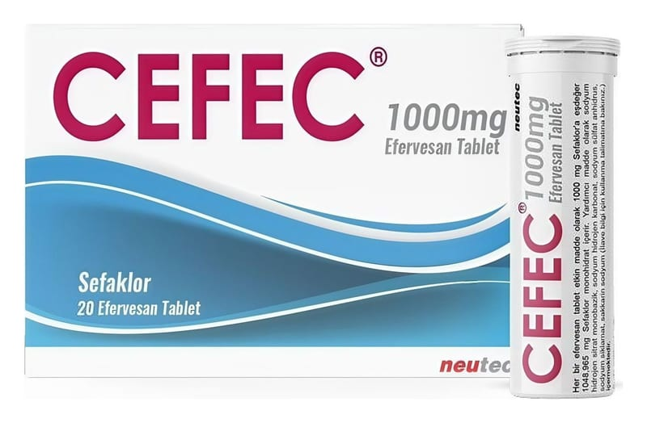

Cefec 1000 mg Efervesan Tablet, 20 Adet

Ne için kullanılır
KT · Bölüm 1CEFEC, bejden açık sarıya, yuvarlak, bir yüzü çentikli efervesan tabletler halindedir, 20 (2x10) efervesan tablet silika jelli kapak ile kapatılmış plastik tüpte, karton kutu içerisinde kullanma talimatı ile ambalajlanmıştır.
CEFEÇ, beta laktam antibakteriyellerden ikinci kuşak sefalosporinler olarak adlandırılan bir gruba aittir.
CEFEC, sefaklora duyarlı mikroorganizmaların neden olduğu akut bronşit, kronik bronşitin akut alevlenmeleri, farenjit (yutak iltihabı), tonsilit (bademcik iltihabı), pnömoni (zatürre), komplikasyonsuz alt idrar yolu enfeksiyonları, gonore (bel soğukluğu), deri ve yumuşak doku enfeksiyonlarının tedavisinde kullanılır.